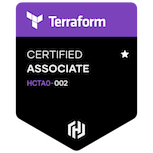

Rob Gryder
Systems Engineer, Security Professional
Visitors: 0
Download PDF
rob@gryder.io
Technical
Ansible
Terraform
Powershell
Python
AWS
Azure
Windows
Linux
Git
Experience
Peraton
Cyber Systems Engineer
2022-Present
Manage private and public cloud development environments for CDM solutions
Automate infrastructure configuration and vulnerability remediation with Ansible Automation Platform
Collaborate with application engineers to streamline deployment of infrastructure
Harden systems in accordance with DISA STIGs
City of Lynchburg
Network Analyst
2018-2022
Built automated VM backup integrity verification system
Implemented privileged remote access system to provide secure system administration capabilities for vendors and IT staff
Automated patch management with Azure Automation
Implemented and managed SecurityOnion SIEM, SolarWinds network monitoring
Deployed Defender for Office 365 email security, supported rollout of Fortinet MFA and NAC
Planned and enforced tiered administrative accounts for IT staff to decrease risk of credential compromise
City of Lynchburg
IT Support Technician
2016-2018
Developed PowerShell automation solutions to streamline IT operations
Provided first-line technical support for employees
Education
George Mason University - Fairfax, Virginia
Information Technology — Information Security
Certifications

Rob Gryder —
rob@gryder.io